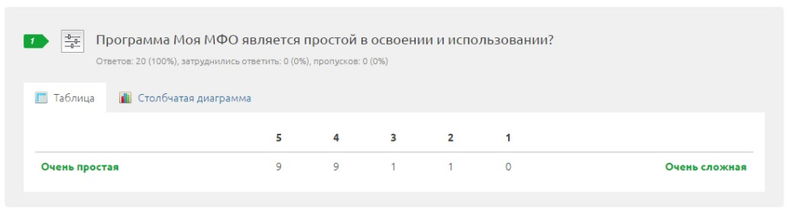

Опрос — май 2016
Данный опрос проводился в конце мая 2016 года. Всего организаций, которым было направлено письмо с предложением ответить на опрос — 70. Ответов получено — 20. Спасибо всем, кто поделился своим мнением, оно позволяет выявить узкие места и работать над ними. Результат данного опроса — «хорошо», но есть над чем поработать.
